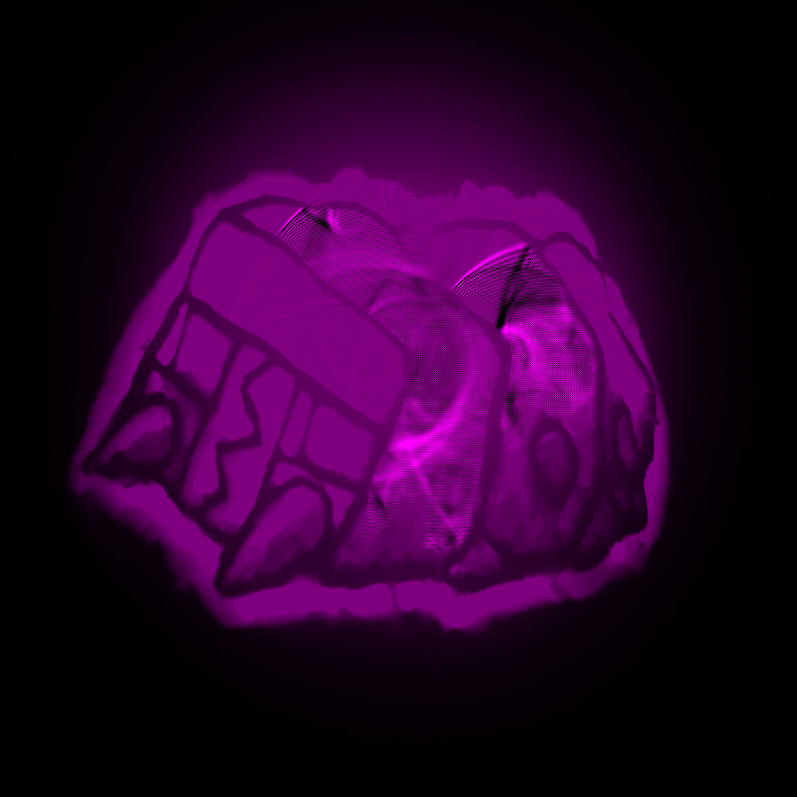
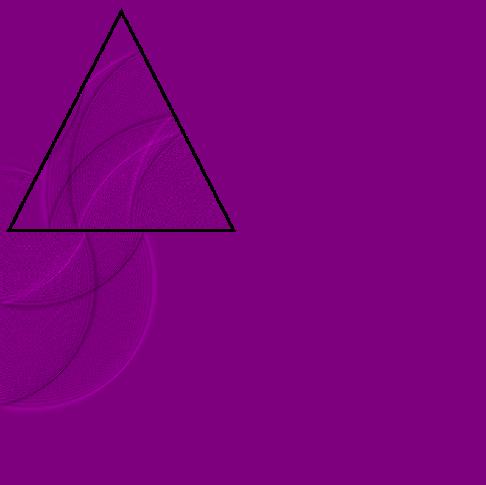
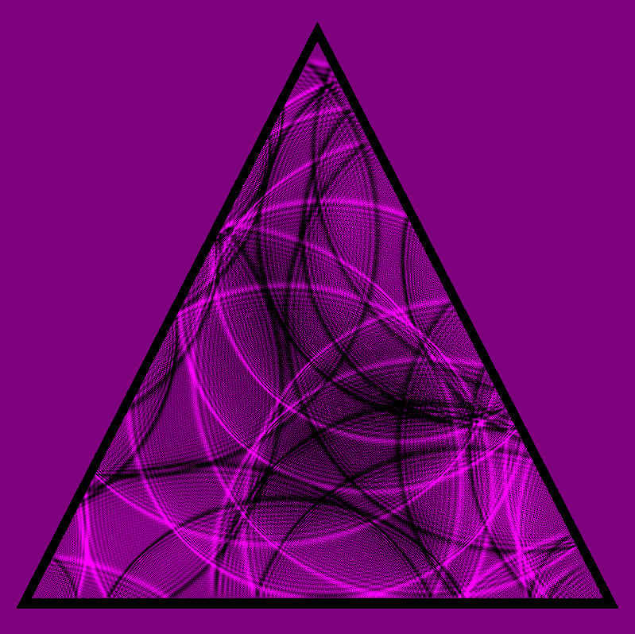
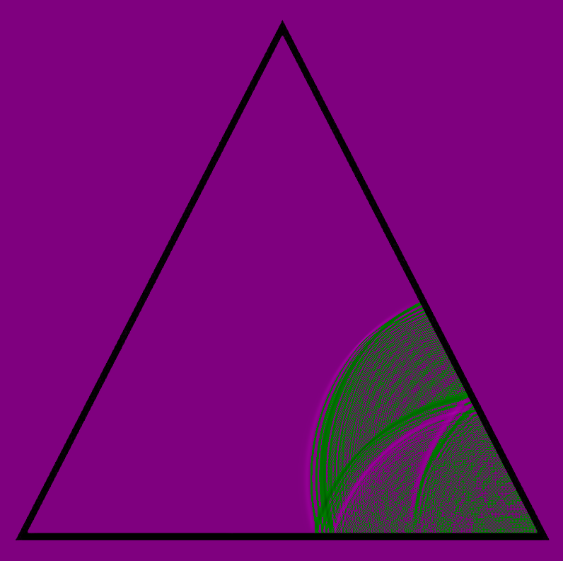

Future Improvements
Grayscale input textures for dampening
Vertex Array of Energies instead of Fragment Array
Resizeable textures
Different boundary conditions
More configurable options
Integrate it into a framework
   